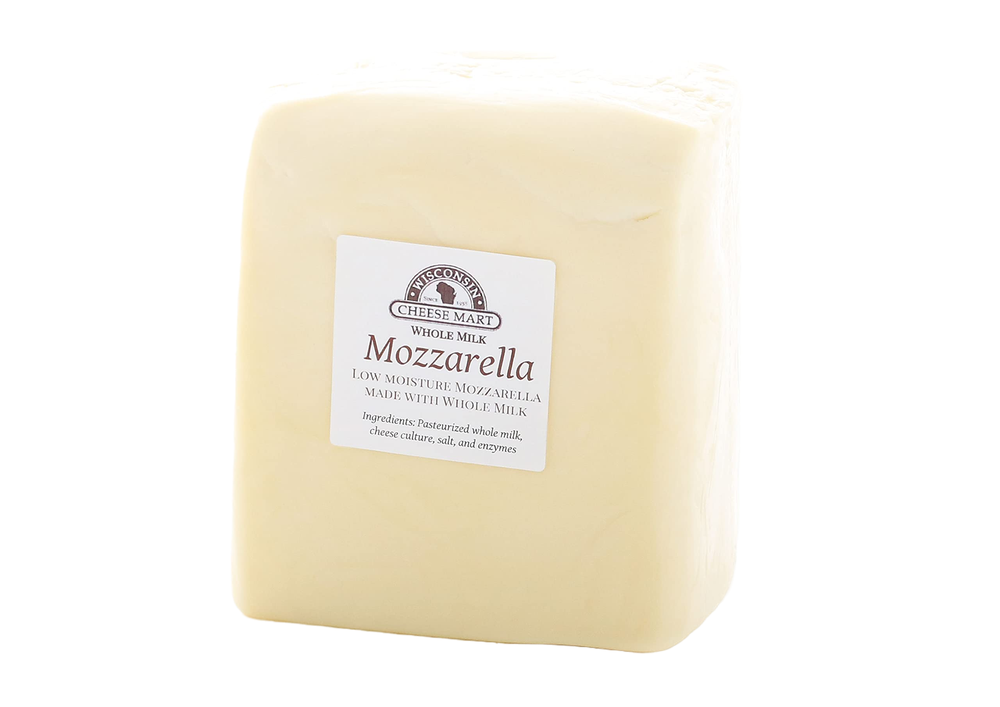

<!doctype html>
<html lang="en"></html>
<head>
    <meta charset="utf-8">
    <meta name="viewport" content="width=device-width, initial-scale=1">
    <title>Top Cheeses</title>
    <link href="https://cdn.jsdelivr.net/npm/bootstrap@5.2.2/dist/css/bootstrap.min.css" rel="stylesheet" integrity="sha384-Zenh87qX5JnK2Jl0vWa8Ck2rdkQ2Bzep5IDxbcnCeuOxjzrPF/et3URy9Bv1WTRi" crossorigin="anonymous">
    <script src="https://cdn.jsdelivr.net/npm/bootstrap@5.2.2/dist/js/bootstrap.bundle.min.js" integrity="sha384-OERcA2EqjJCMA+/3y+gxIOqMEjwtxJY7qPCqsdltbNJuaOe923+mo//f6V8Qbsw3" crossorigin="anonymous"></script>
    <link rel="stylesheet" href="Food.CSS">
  </head>
  <body style="background-color: rgb(247, 247, 247); background-image: url(./Oven-baked_mozzarella_sticks.jpg); background-size: 99.999999%;">
<nav class="navbar navbar-expand-sm bg-light">

  <div class="container-fluid">
    <!-- Links -->
    <ul class="navbar-nav">
      <li class="nav-item">
        <a class="nav-link" href="food.html">Home</a>
      </li>
      <li class="nav-item">
        <a class="nav-link" href="Mozzarella.html">Cheese 1</a>
      </li>
      <li class="nav-item">
        <a class="nav-link" href="Parmesan.html">Cheese 2</a>
      </li>
      <li class="nav-item">
        <a class="nav-link" href="Cheddar.html">Cheese 3</a>
      </li>
      <li class="nav-item">
        <a class="nav-link" href="Swiss.html">Cheese 4</a>
      </li>
      </li>
    </ul>
    </div>
  </div>
  
  </nav>

  
  <div id="MozzarellaText">
    <h1 style="color: white;">1. Mozzarella Cheese</h1>
    <p style="color: white;">Mozzarella is a southern Italian cheese traditionally made from Italian buffalo's milk by the pasta filata method. Fresh mozzarella is generally white but when seasoned it turns to a light yellow depending on the animal's diet.</p>
  </div>
  <p id="Mozz"></p>
</body>